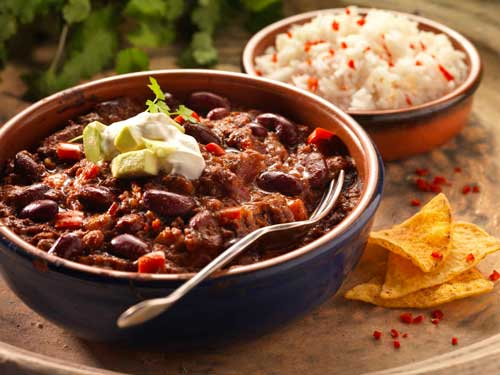

Slow Cooker Chilli

A prep-and-forget filling meal!
This chilli recipe is great for slow cooking, ready for when you are.
Include additional proteins or veggies to bulk it up for less.
Ingredients
Required
- Beef and/or Pork mince
- Canned Chopped Tomatoes
- 2 Onions
- 2 Bell Peppers
- 1 Can Beans (of preference)
Optional
- Chillis for heat
- Additional Beans
- Accompaniment (Rice, Nachos etc.)
Steps
- Add all ingredients to slow cooker
- Cook on low for up to 12 hours or high for at least 3 hours
- Serve!
N.B This recipe stand up well on its own, but feel free to enjoy it with rice, nacho chips or whatever else you feel like.
Back to Recipes